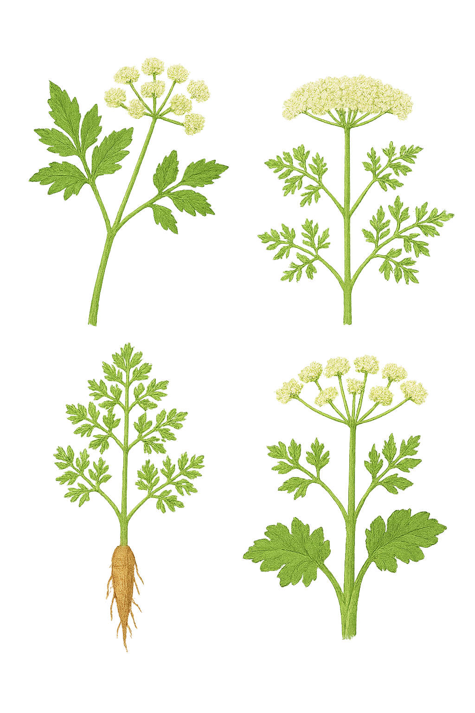

Apiaceae
Carrot Family / Parsley Family / Umbellifers
Apiaceae (formerly Umbelliferae) is a large family of mostly aromatic herbaceous plants, comprising about 430 genera and over 3,700 species. It is characterized by its distinctive inflorescence, typically a compound umbel (an umbel of umbels), alternate and often highly dissected leaves with sheathing petioles, hollow stems, small 5-petaled flowers, and fruit typically a dry schizocarp splitting into two one-seeded segments. The family includes important food crops, spices, and some highly poisonous plants.
Overview
The Apiaceae family is cosmopolitan but most diverse in temperate regions of the Northern Hemisphere. Its members are typically recognizable by their finely divided leaves and characteristic flat-topped flower clusters (umbels). Many species contain aromatic oils and resins, leading to their use as vegetables (carrot, celery, parsnip), culinary herbs (parsley, dill, cilantro/coriander, fennel), and spices (caraway, cumin, anise).
However, the family also includes some notoriously poisonous plants, such as poison hemlock (Conium maculatum), water hemlocks (Cicuta species), and fool's parsley (Aethusa cynapium). Misidentification within the family can have serious consequences, making careful observation of identifying features crucial. The characteristic fruit, a dry schizocarp splitting into two mericarps, is another key feature. Ecologically, many umbellifers provide important nectar sources for beneficial insects.
Quick Facts
- Scientific Name: Apiaceae Lindl. (alt. Umbelliferae Juss.)
- Common Name: Carrot family, Parsley family, Umbellifer family
- Number of Genera: Approximately 430-440
- Number of Species: Approximately 3,700-3,800
- Distribution: Cosmopolitan, especially temperate Northern Hemisphere.
- Evolutionary Group: Eudicots - Asterids (Campanulids)
- Order: Apiales
Key Characteristics
Growth Form and Habit
Predominantly herbaceous (annuals, biennials, perennials), rarely shrubs or small trees. Plants are often aromatic due to volatile oils and resins.
Stems
Stems are frequently hollow between the nodes, often ribbed or furrowed.
Leaves
Leaves are usually arranged alternately along the stem, often large and highly dissected or compound (pinnately or ternately), though sometimes simple. A key feature is the petiole base, which typically broadens into a sheath clasping the stem. Stipules are generally absent.
Inflorescence
The defining feature is the inflorescence, typically a compound umbel: numerous small simple umbels (umbellets) arise from a common point, and these primary stalks (rays) often also arise from a common point. Simple umbels occur less frequently. Umbels and umbellets are often subtended by whorls of bracts (involucre) and bractlets (involucel), respectively, though these can be absent.
Flowers
Flowers are typically small, actinomorphic (radially symmetric), usually bisexual, and epigynous (inferior ovary). Typically 5-merous perianth.
- Calyx: Sepals usually 5, highly reduced to small teeth or essentially absent, situated on top of the ovary.
- Corolla: Composed of 5 distinct (free) petals, often white or yellow (sometimes pinkish or greenish). Petals are frequently notched at the apex or have an infolded tip, and they fall off early. Outer flowers in an umbel sometimes have enlarged outer petals, creating a slightly zygomorphic appearance for the umbel as a whole.
- Androecium: Stamens number 5, alternating with the petals, arising from a nectar disc (stylopodium) on top of the ovary.
- Gynoecium: Ovary is inferior, composed of 2 fused carpels forming 2 locules. A prominent, often swollen, nectar-producing disc called the stylopodium typically crowns the ovary, bearing two distinct styles. Each locule contains a single pendulous ovule.
Fruits and Seeds
The characteristic fruit is a dry schizocarp, which develops from the 2-carpellate inferior ovary. At maturity, it splits longitudinally into two single-seeded, indehiscent segments called mericarps. The two mericarps often remain attached temporarily to a slender central stalk (carpophore). Mericarps typically have longitudinal ribs (primary ribs over vascular bundles, secondary ribs between them) and often contain oil tubes (vittae) between the ribs, which are aromatic. Fruit shape, rib pattern, presence of wings or bristles, and vitta details are crucial for genus/species identification.
Chemical Characteristics
Rich in aromatic essential oils (terpenoids, phenylpropanoids) and resins stored in oil tubes (vittae) and canals throughout the plant. Some species produce furanocoumarins (causing photosensitivity) or potent alkaloids (like coniine in poison hemlock).
Field Identification
Identifying Apiaceae usually involves recognizing the umbel inflorescence, dissected leaves with sheathing petioles, often hollow stems, and characteristic aromatic scent.
Primary Identification Features
- Compound Umbels: The characteristic flat-topped or rounded clusters made of smaller umbels (umbellets).
- Alternate, Dissected/Compound Leaves: Leaves usually alternate and finely divided.
- Sheathing Petiole Bases: Base of the leaf stalk typically wraps around the stem.
- Small, 5-Petaled Flowers: Individual flowers tiny, usually white or yellow, with 5 separate petals.
- Inferior Ovary with Stylopodium: Ovary below flower parts, often topped by a swollen disc bearing 2 styles.
- Schizocarp Fruit: Dry fruit splitting into 2 single-seeded mericarps (often ribbed).
- Aromatic (Often): Crushed leaves or stems frequently release distinct scents (parsley, dill, carrot, anise, etc., but also unpleasant in some).
- Hollow Stems (Often): Stems frequently hollow between nodes.
Secondary Identification Features
- Bracts/Bractlets: Presence, absence, shape, and size of bracts (at base of main umbel) and bractlets (at base of umbellets).
- Leaf Dissection Pattern: Pinnate vs. ternate division, degree of fineness.
- Mericarp Details: Ribs (prominent? winged?), presence of bristles/hooks, shape.
- Specific Scent: Helps identify culinary herbs vs. potentially toxic species.
Seasonal Identification Tips
- Spring/Summer: Peak vegetative growth and flowering season for most species. Inflorescences are key.
- Summer/Fall: Fruits (schizocarps) develop and are often the most critical feature for definitive identification to genus/species. Dried umbels often persist.
- Winter: Dried stalks with persistent umbel structures or basal rosettes of biennials/perennials may be visible.
- Caution: Due to the presence of highly poisonous species that resemble edible ones, never consume a wild umbellifer unless identification is absolutely certain.
Common Confusion Points
- Araliaceae (Ginseng/Ivy Family): Closely related (same order), also often has umbels and compound leaves. Differences: Mostly woody (Apiaceae mostly herbaceous); fruit is a fleshy berry or drupe (not a dry schizocarp).
- Ranunculaceae (Buttercup Family): Some (Thalictrum) have highly dissected alternate leaves. Differences: Flowers usually have numerous simple pistils (apocarpous) and numerous stamens, petals sometimes absent or modified, lack true umbels, fruit usually achenes or follicles.
- Asteraceae (Sunflower Family): Some have dissected leaves and flat-topped flower clusters (corymbs), but flowers are highly modified florets aggregated into composite heads (capitula) with involucral bracts.
The compound umbel + inferior ovary + schizocarp fruit + sheathing petiole combination is strongly diagnostic for Apiaceae.
Field Guide Quick Reference
Look For:
- Herbaceous (mostly), often aromatic
- Compound umbel inflorescence (usu.)
- Alternate, dissected/compound leaves
- Sheathing petiole bases
- Flowers small, 5 petals, 5 stamens
- Ovary inferior, stylopodium often present
- Fruit a dry schizocarp (splitting into 2)
- Stems often hollow
Key Variations:
- Umbels simple or compound
- Bracts/bractlets present or absent
- Leaf dissection level
- Fruit ribs, wings, bristles
- Specific aroma
- Biennial rosette present/absent
Notable Examples
The Carrot family is indispensable for food and spices, but also contains deadly poisons.

Daucus carota
Queen Anne's Lace / Wild Carrot
A biennial herb native to Eurasia, now a cosmopolitan weed and the wild ancestor of the cultivated carrot. Features finely dissected, fern-like leaves and large, flat-topped compound umbels of tiny white flowers, often with a single dark purple flower in the center. Umbels contract inwards ('bird's nest') as fruit matures. Taproot is edible but much smaller/woodier than cultivated carrot.

Conium maculatum
Poison Hemlock
A highly poisonous biennial herb native to Eurasia, naturalized widely, often in moist disturbed areas. Resembles wild carrot or parsley but grows much taller (up to 3m), has smooth stems distinctively mottled or streaked with purple, and emits a foul, 'mousy' odor when crushed. All parts contain potent neurotoxic alkaloids (coniine). Umbels white. Mistaken identity can be fatal.

Petroselinum crispum
Parsley
A biennial herb (usually grown as an annual) native to the Mediterranean region, cultivated globally as a culinary herb and garnish. Features bright green, ternately compound leaves (curly or flat-leaf varieties exist). Produces compound umbels of small greenish-yellow flowers in its second year. Distinctive fresh aroma.

Anethum graveolens
Dill
An annual herb native to southwest Asia, cultivated for its feathery leaves (dill weed) and seeds used as flavorings. Features finely dissected, thread-like blue-green leaves and large compound umbels of small yellow flowers. Mericarp fruits are flattened and winged.

Apium graveolens
Celery / Celeriac
A biennial herb native to marshy areas of Europe and Asia. Cultivated primarily for its fleshy, crisp petioles (celery stalks) or its swollen hypocotyl/root (celeriac). Features pinnately compound leaves and compound umbels of small white flowers.

Foeniculum vulgare
A perennial herb (often grown as annual) native to the Mediterranean, cultivated for its aromatic leaves, seeds, and swollen leaf bases ('bulb fennel'). Features finely dissected, thread-like leaves (similar to dill but often coarser) with a distinct anise/licorice scent. Produces large compound umbels of yellow flowers.
Phylogeny and Classification
Apiaceae is the namesake family of the order Apiales, positioned within the Campanulid clade of Asterids. Apiales is a well-supported order also containing Araliaceae (Ginseng family), Pittosporaceae, Griseliniaceae, Myodocarpaceae, Pennantiaceae, and Torricelliaceae. Molecular data strongly support Apiaceae as being sister to a clade containing Araliaceae and Myodocarpaceae.
The close relationship between Apiaceae and Araliaceae reflects shared features like the frequent occurrence of umbellate inflorescences and often dissected leaves. However, the major divergence lies in Apiaceae being predominantly herbaceous with dry schizocarpic fruits, while Araliaceae is predominantly woody with fleshy berry or drupe fruits. The evolution of the characteristic compound umbel and the specialized schizocarp fruit with aromatic oil tubes (vittae) are key developments within the Apiaceae lineage. The family is typically divided into several subfamilies based largely on fruit structure and molecular data.
Position in Plant Phylogeny
- Kingdom: Plantae
- Clade: Angiosperms (Flowering plants)
- Clade: Eudicots
- Clade: Asterids
- Clade: Campanulids
- Order: Apiales
- Family: Apiaceae (alt. Umbelliferae)
Evolutionary Significance
Apiaceae represents a highly successful radiation of primarily herbaceous plants, particularly diverse in temperate zones. Key evolutionary features include:
- Compound Umbel: A highly efficient structure for attracting numerous small pollinators to densely packed small flowers.
- Schizocarp Fruit: A specialized dry fruit type facilitating dispersal of single-seeded units, often with adaptations for wind (wings) or animal attachment (bristles).
- Chemical Diversity: Production of aromatic essential oils and sometimes potent toxins provides defense and resources exploited by humans.
- Herbaceous Habit: Contrasting with the predominantly woody Araliaceae, suggesting adaptation to different ecological niches, possibly favoring faster life cycles or colonization of open habitats.
The family's combination of distinctive morphology, clear chemical signatures, and economic importance makes it a significant group both ecologically and anthropogenically.